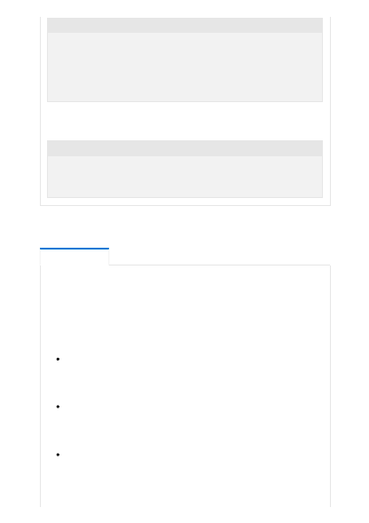

Zero-shot: In this case, no examples are provided to the model and only the task
request is provided. The following example shows a zero-shot prompt:
The GPT-4, GPT-3, and Codex models in the Azure OpenAI service can be used in
multiple scenarios. The following list isn't comprehensive, but it illustrates the
diversity of tasks that can be supported with appropriate mitigations:
Chat and conversation interaction : Users can interact with a conversational
agent that responds with responses drawn from trusted documents such as
internal company documentation or tech support documentation.
Conversations must be limited to answering scoped questions.
Chat and conversation creation : Users can create a conversational agent that
responds with responses drawn from trusted documents such as internal
company documentation or tech support documentation. Conversations must
be limited to answering scoped questions.
Code generation or transformation scenarios : For example, converting one
programming language to another, generating docstrings for functions,
converting natural language to SQL.
Convert the questions to a command:
Q: Ask Constance if we need some bread
A: send-msg `find constance` Do we need some bread?
Q: Send a message to Greg to figure out if things are ready for
Wednesday.
A:
Convert the question to a command:
Q: Ask Constance if we need some bread
A:
Use cases
Intended uses